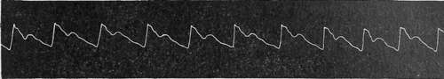
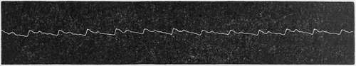
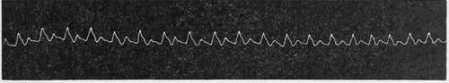
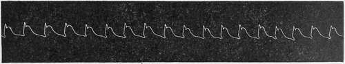
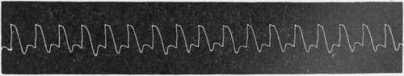

Gastro-Intestinal Tract, Respiratory Tract, Circulatory Apparatus
Description
This section is from the book "Malaria, Influenza And Dengue", by Julius Mennaberg and O. Leichtenstern. Also available from Amazon: Malaria, influenza and dengue.
Gastro-Intestinal Tract, Respiratory Tract, Circulatory Apparatus
The gastro intestinal tract frequently participates in the malarial infection. Loss of appetite, eructation, a feeling of weight in the stomach, vomiting, cardialgia, are very common symptoms at the beginning of the paroxysm. True, it cannot be determined in every case which symptoms are to be attributed to nervous disturbances and which to direct participation of the stomach, since the two factors often act together. On the part of the intestine, diarrhea is the most frequent occurrence. This is sometimes so severe as to suggest cholera or dysentery.
Icterus, or at least a subicteric discoloration, depending on whether the icterus is due to a gastroduodenal catarrh or polycholia, is not uncommon.
The respiratory tract participates frequently in the form of a catarrh affecting usually the bronchi. A dry cough is not rarely observed during the paroxysms, and objectively we may find here and there a few rales. Moreover, during the cold stage dyspnea may occur, though rarely orthopnea.
The circulatory apparatus is affected least of all, and only indirectly. The narrowing of the arterioles during the cold stage leads to an increase of blood pressure; the subsequent dilatation during the hot stage, to a decrease. Corresponding to this, the pulse in the first stage is small and tense; in the second and third, full, soft, and exquisitely dicrotic (Figs. 13-17).
Fig. 13.-Pulse curve op a Double Tertian During Apyrexia. Temperature, 36.5° C. (97.7° F.); pulse, 54; respiration, 14.
Fig. 14.-The Same Case at the Beginning of the Cold Stage. Temperature, 38.2° C. (100.7° F.); pulse, 104.
Fig. 15.-The Same Case During the Cold Stage. Temperature, 40.2° C. (104.4° F.); pulse, 134; respiration, 20.
Fig. 16.-The Same Case at the Beginning of the Hot Stage. Temperature, 38.7° C. (101.6° F.); pulse, 92.
Fig. 17.-Malignant Tertian During Hot Stage. Temperature, 39.2° C. (102.6° F.) (anadicrotism).
The pulse usually increases in frequency with the rise of temperature, so that during the acme of a paroxysm we often find it
120 to 140. Sometimes it is less than the temperature would call for. During the apyrexia the pulse promptly falls in frequency, sometimes even to slight brachycardia. A slight degree of arhyth mia at the beginning or end of the paroxysm occasionally occurs, yet seldom becomes a prominent symptom.
The increase of blood pressure during the cold stage may lead to rupture of vessels, especially in the brain. Sebastian reports the rupture of the right auricle of the heart during this stage. Duroziez and Lancereaux report endocarditis in causal connection with malaria . Laveran denies that malaria can produce either endocarditis or pericarditis, and assumes in these two cases a coincidental association. From my own experience I would take Laveran's view. In relation to this further details are given in the Special Part.
Continue to:
Tags
mosquito, malaria, influenza, dengue, symptoms, outbreaks, diseases, hemoglobinuria, infections